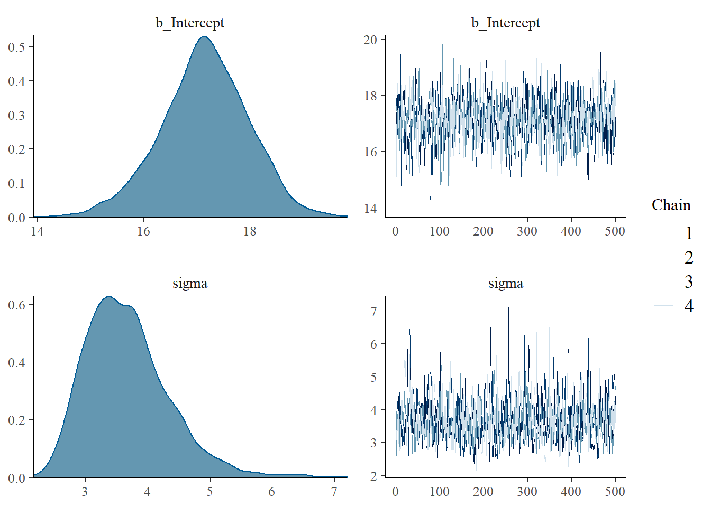

v ggplot2 3.3.6 v purrr 0.3.4
v tibble 3.1.7 v dplyr 1.0.9
v tidyr 1.2.0 v stringr 1.4.0
v readr 2.1.2 v forcats 0.5.1
Warning: package 'ggplot2' was built under R version 4.1.3
Warning: package 'tibble' was built under R version 4.1.3
Warning: package 'tidyr' was built under R version 4.1.3
Warning: package 'readr' was built under R version 4.1.3
Warning: package 'dplyr' was built under R version 4.1.3
-- Conflicts ------------------------------------------ tidyverse_conflicts() --
x dplyr::filter() masks stats::filter()
x dplyr::lag() masks stats::lag()
library(brms)
Warning: package 'brms' was built under R version 4.1.3
Loading required package: Rcpp
Warning: package 'Rcpp' was built under R version 4.1.3
Loading 'brms' package (version 2.17.0). Useful instructions
can be found by typing help('brms'). A more detailed introduction
to the package is available through vignette('brms_overview').
Attaching package: 'brms'
The following object is masked from 'package:stats':
ar
library(bayesplot)
Warning: package 'bayesplot' was built under R version 4.1.3
This is bayesplot version 1.9.0
- Online documentation and vignettes at mc-stan.org/bayesplot
- bayesplot theme set to bayesplot::theme_default()
* Does _not_ affect other ggplot2 plots
* See ?bayesplot_theme_set for details on theme setting
library(ProbBayes)
Warning: package 'ProbBayes' was built under R version 4.1.3
Loading required package: LearnBayes
Attaching package: 'LearnBayes'
The following object is masked from 'package:brms':
rdirichlet
Loading required package: gridExtra
Attaching package: 'gridExtra'
The following object is masked from 'package:dplyr':
combine
Loading required package: shiny
Warning: package 'shiny' was built under R version 4.1.3
4.0.1 Normaal samplingsmodel
Stel dat \(y_1,...,y_n\) een sample is van een normale distributie met gemiddelde \(\mu\) en standaard deviatie \(\sigma\).
Voor een prior nemen we aan dat \(\mu\) en \(\sigma\) onafhankelijk zijn met \(\mu\) als een normale prior en \(\sigma\) met een uniforme prior op een interval.
4.0.2 Data en prior
We kijken naar de variable time (tijd) van de dataset federer_time_to_serve die de tijd tot de service omvat voor 20 serves van Roger Federer.
We plaatsen een zwak informatieve prior op de parameters. We nemen aan datde gemiddelde tijd-tot-service \(\mu\) N(15, 5) is en gaan uit van een standard deviatie \(\sigma\) die uniform is op het interval (0, 20).
4.0.3 Bayesiaans fitten
We gebruiken de brm() functie met de family = gaussian optie. Let op hoe de prior gespecificeerd is door het prior argument.
fit <-brm(data = federer_time_to_serve, family = gaussian, time ~1,prior =c(prior(normal(15, 5), class = Intercept),prior(uniform(0, 20), class = sigma)),iter =1000, refresh =0, chains =4)
Warning: It appears as if you have specified an upper bounded prior on a parameter that has no natural upper bound.
If this is really what you want, please specify argument 'ub' of 'set_prior' appropriately.
Warning occurred for prior
<lower=0> sigma ~ uniform(0, 20)
Compiling Stan program...
Start sampling
Je krijgt densityplots en traceplots voor \(\mu\) en \(\sigma\) met de plot() functie.
plot(fit)

Je krijgt posteriorsamenvattingen voor elke parameter met de summary() functie.
summary(fit)
Family: gaussian
Links: mu = identity; sigma = identity
Formula: time ~ 1
Data: federer_time_to_serve (Number of observations: 20)
Draws: 4 chains, each with iter = 1000; warmup = 500; thin = 1;
total post-warmup draws = 2000
Population-Level Effects:
Estimate Est.Error l-95% CI u-95% CI Rhat Bulk_ESS Tail_ESS
Intercept 17.15 0.82 15.44 18.65 1.00 1474 1155
Family Specific Parameters:
Estimate Est.Error l-95% CI u-95% CI Rhat Bulk_ESS Tail_ESS
sigma 3.67 0.67 2.64 5.23 1.00 1264 1071
Draws were sampled using sampling(NUTS). For each parameter, Bulk_ESS
and Tail_ESS are effective sample size measures, and Rhat is the potential
scale reduction factor on split chains (at convergence, Rhat = 1).
Je kunt een matrix van gesimiuleerde trekkingen krijgen met de posterior_samples() functie.
post <-posterior_samples(fit)
Warning: Method 'posterior_samples' is deprecated. Please see ?as_draws for
recommended alternatives.